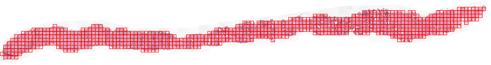
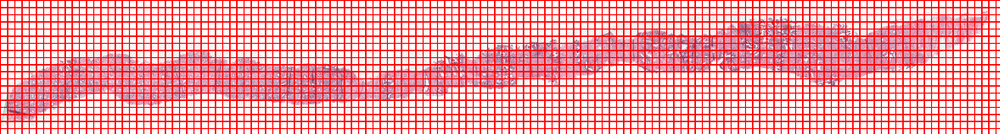

Saving tile images
Tile images can be saved easily with SlideReader. Its easy to define different tile sizes and most importantly the maximum amount of background.
from histoprep import SlideReader
# Read slide image.
reader = SlideReader(slide_path)
# Get tile coordinates
coords = reader.get_tile_coordinates(width=256, overlap=0.1, max_background=0.5)
display(reader.annotated_thumbnail_tiles)

Here we can see that SlideReader automatically calculates the amount of background in each tile, and discarded those with more that 50% background. If we set the maximum amount of background to 100% we get a lot of unnecessary tiles.
bad_coords = reader.get_tile_coordinates(width=256, overlap=0.1, max_background=1.0)
display(reader.annotated_thumbnail_tiles)

Tiles can also be saved easily and fast!
tile_metadata = reader.save_tiles(
output_dir="/data/tmp",
coordinates=reader.get_tile_coordinates(width=256, max_background=0.5),
)
|##########| 605/605 [00:00<00:00, per_image=19.5ms]
Now all tiles, the tissue mask, thumbnail and the annotated thumbnail images are saved into the output_dir.
/data/tmp
└── biopsy_slide
├── annotated_thumbnail_tiles.jpeg
├── thumbnail.jpeg
├── tile_metadata.csv
├── tiles
│ ├── x0_y3584_w256_h256.jpeg
│ ├── x10240_y2048_w256_h256.jpeg
│ ├── x10240_y2304_w256_h256.jpeg
│ ├── x10240_y2560_w256_h256.jpeg
│ ├── x10240_y2816_w256_h256.jpeg
│ └── [omitted 601 additional entries]
└── tissue_mask.jpeg
When SlideReader saves individual tiles, it also calculates preprocessing metrics for each imagem which can be used for preprocessing. These are saved to tile_metadata.csv and also returned by the save_tiles function.
tile_metadata.head(5)
| slide_name | x | y | w | h | level | path | background | gray_mean | red_mean | ... | saturation_q=0.05 | saturation_q=0.1 | saturation_q=0.5 | saturation_q=0.9 | saturation_q=0.95 | brightness_q=0.05 | brightness_q=0.1 | brightness_q=0.5 | brightness_q=0.9 | brightness_q=0.95 | |
|---|---|---|---|---|---|---|---|---|---|---|---|---|---|---|---|---|---|---|---|---|---|
| 0 | biopsy_slide | 0 | 3584 | 256 | 256 | 0 | /data/tmp/biopsy_slide/tiles/x0_y3584_w256_h25... | 0.557053 | 223.672 | 219.163 | ... | 18 | 27 | 44 | 75 | 88 | 162 | 196 | 220 | 228 | 229 |
| 1 | biopsy_slide | 256 | 2816 | 256 | 256 | 0 | /data/tmp/biopsy_slide/tiles/x256_y2816_w256_h... | 0.481506 | 207.230 | 221.283 | ... | 25 | 30 | 61 | 88 | 99 | 144 | 172 | 220 | 233 | 236 |
| 2 | biopsy_slide | 256 | 3072 | 256 | 256 | 0 | /data/tmp/biopsy_slide/tiles/x256_y3072_w256_h... | 0.099411 | 178.217 | 200.113 | ... | 21 | 29 | 60 | 94 | 106 | 127 | 153 | 212 | 228 | 230 |
| 3 | biopsy_slide | 256 | 3328 | 256 | 256 | 0 | /data/tmp/biopsy_slide/tiles/x256_y3328_w256_h... | 0.038925 | 163.737 | 194.649 | ... | 25 | 38 | 69 | 102 | 115 | 117 | 138 | 206 | 225 | 228 |
| 4 | biopsy_slide | 256 | 3584 | 256 | 256 | 0 | /data/tmp/biopsy_slide/tiles/x256_y3584_w256_h... | 0.054428 | 159.479 | 195.712 | ... | 32 | 41 | 72 | 145 | 150 | 108 | 127 | 209 | 232 | 235 |
5 rows × 55 columns
When there are thousands of slide images to process, writing scripts for saving tiles from each of them can be annoying. For this reason, we wrote the scripts for you! HistoPrep can also be used as an executable.
!HistoPrep --help
usage: HistoPrep input_dir output_dir width {optional arguments}
██╗ ██╗██╗███████╗████████╗ ██████╗ ██████╗ ██████╗ ███████╗██████╗
██║ ██║██║██╔════╝╚══██╔══╝██╔═══██╗██╔══██╗██╔══██╗██╔════╝██╔══██╗
███████║██║███████╗ ██║ ██║ ██║██████╔╝██████╔╝█████╗ ██████╔╝
██╔══██║██║╚════██║ ██║ ██║ ██║██╔═══╝ ██╔══██╗██╔══╝ ██╔═══╝
██║ ██║██║███████║ ██║ ╚██████╔╝██║ ██║ ██║███████╗██║
╚═╝ ╚═╝╚═╝╚══════╝ ╚═╝ ╚═════╝ ╚═╝ ╚═╝ ╚═╝╚══════╝╚═╝
by Jopo666 (2022)
positional arguments:
input_dir Directory with slides.
output_dir For processed slides.
width Width of the tile.
optional arguments:
-h, --help show this help message and exit
--overlap Overlap between neighbouring tiles. (default: 0.1)
--max_background Maximum allowed background per tile. (default: 0.75)
--height Height of the tile. If None, set to width. (default:
None)
--level Slide level for reading tile regions. (default: 0)
--ext [ ...] File extensions to load. If not set, uses all readable
extensions. (default: None)
--num_workers Number of image saving worker processes. (default: 20)
--threshold Threshold for tissue detection. If None, set with
Otsu's method. (default: None)
--threshold_multiplier
Multiply Otsu's threshold with this value. Ignored if
threshold is set. (default: 1.05)
--max_dimension Maximum dimension for the thumbnail. (default: 16384)
--overwrite Removes everything in output folder before saving
images. (default: False)
--image_format Image format. (default: jpeg)
--quality Quality for jpeg compression. (default: 95)
--depth Depth for recursively finding slide images from the
input_dir. (default: 1)
--verbose More verbose output. (default: False)